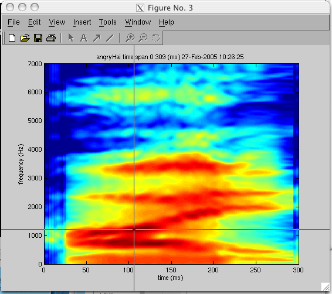
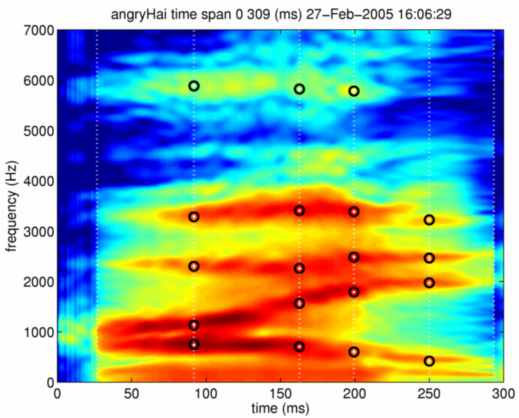
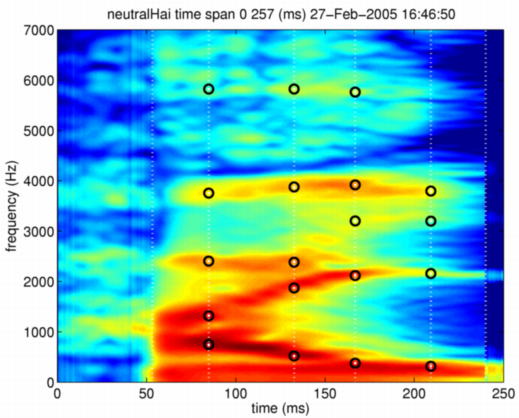

| | 読み出しの例 | Contents | Index |
ここでは、 Mオブジェクトの情報表示用の関数displayMobjectを用いてSTRAIGHTスペクトログラムを表示し、 Matlabに用意されているインタラクティブな座標読み出し関数ginputを使って 特徴点の情報を求めることにします。 まず、次のようにしてSTRAIGHTスペクトログラムを表示させます。
displayMobject(angryHai,'spectrogram','angryHai');
こうして表示させたスペクトログラムのタイトル欄の情報を参考にして、 注目したい領域を表示させ、ginput関数を用いることにより、 画面上にはクロスヘアーカーソルが表示されます。 操作は、以下のようになります。
axis([0 300 0 7000]) rawanch = ginputクロスヘアーカーソルが表示されたウインドウの様子は、以下のようになります。

疑似カラーで表されたスペクトログラムの上でマウスを移動させると、 クロスヘアーカーソルも追従して移動します。 これを用いて、特徴点の座標を読み出すことにします。 特徴点を設定したい位置でマウスをクリックして下さい。 この操作を必要なだけ繰返し、最後にカーソルを図の中に位置させたまま、 キーボードのリターンキーを押して下さい。 以下のように座標が出力されます。 また、これらの値は、変数rawanchに代入されます。
>> rawanch = ginput
rawanch =
1.0e+03 *
0.0266 -0.5424
0.2934 -0.6243
0.0916 0.7471
0.0923 1.1360
0.0916 2.3026
0.0923 3.2851
0.0916 5.8845
0.1621 0.7061
0.1635 1.5658
0.1621 2.2617
0.1628 3.4079
0.1635 5.8231
0.1994 0.6038
0.1987 1.7909
0.1994 2.4868
0.1987 3.3874
0.2008 5.7822
0.2499 0.4196
0.2506 1.9751
0.2492 2.4664
0.2506 3.2237
左側が時刻の座標（単位 ms）で、 右側が周波数の座標（単位 Hz）です。 ここでは、音声の開始部分や終了部分を他と区別できるように、 STRAIGHTスペクトログラムの外の負の周波数の位置に カーソルを置いてクリックしています。
この値を変数に代入しておいて、自動的に特徴点を取り出すこともできます。 最初は，手作業で特徴点を取り出すことにします。 まず、時刻の順に並び替えます。
[dm1,indsrt] = sort(rawanch(:,1));
rawanch(indsrt,:)
ans =
1.0e+03 *
0.0266 -0.5424
0.0916 2.3026
0.0916 5.8845
0.0916 0.7471
0.0923 1.1360
0.0923 3.2851
0.1621 0.7061
0.1621 2.2617
0.1628 3.4079
0.1635 1.5658
0.1635 5.8231
0.1987 1.7909
0.1987 3.3874
0.1994 0.6038
0.1994 2.4868
0.2008 5.7822
0.2492 2.4664
0.2499 0.4196
0.2506 1.9751
0.2506 3.2237
0.2934 -0.6243
この結果を見ると、27ms, 92ms, 162ms, 199ms, 250ms, 293ms の付近に、時間方向の特徴点が設定されているのが分かります。 このように選ばれた特徴点毎に、周波数方向の特徴点を整列させることで、 特徴点を登録することができます。
しかし、手作業は、間違いが入り易いため、お勧めではありません。 この手続きを自動化した関数setAnchorFromRawAnchorを用意してあるので、 通常は、それを使えば良いでしょう。 先ほどマウスを使って選択した特徴点を、この手続きに入れてみます。 すると、以下のように、特徴点が整理されて構造体のメンバーに代入されます。
>> angryHai = setAnchorFromRawAnchor(angryHai,rawanch)
>> angryHai.anchorTimeLocation
ans =
26.6129
91.8684
162.7880
199.4240
250.0576
293.4332
>> angryHai.anchorFrequency
ans =
1.0e+03 *
-0.5424 0 0 0 0 0 0 0 0
0.7471 1.1360 2.3026 3.2851 5.8845 0 0 0 0
0.7061 1.5658 2.2617 3.4079 5.8231 0 0 0 0
0.6038 1.7909 2.4868 3.3874 5.7822 0 0 0 0
0.4196 1.9751 2.4664 3.2237 0 0 0 0 0
-0.6243 0 0 0 0 0 0 0 0
また、結果は、表示用の関数で以下のように確認することができます。
displayMobject(angryHai,'anchorTimeLocation','angryHai'); axis([0 300 0 7000])

以上は、怒りの音声ですが、同様に平静の音声についても 特徴点を付与しておきましょう。
>> neutralHai.anchorTimeLocation
ans =
53.2834
84.8502
132.6613
166.8779
209.2921
239.9194
>> neutralHai.anchorFrequency
ans =
1.0e+03 *
-0.6038 0 0 0 0 0 0 0 0
0.7471 1.3202 2.4050 3.7558 5.8231 0 0 0 0
0.5219 1.8728 2.3845 3.8787 5.8231 0 0 0 0
0.3787 2.1184 3.2032 3.9196 5.7617 0 0 0 0
0.3173 2.1594 3.2000 3.7968 0 0 0 0 0
-0.5219 0 0 0 0 0 0 0 0
>> displayMobject(neutralHai,'anchorTimeLocation','neutralHai');
>> axis([0 250 0 7000])

| | 読み出しの例 | Contents | Index |